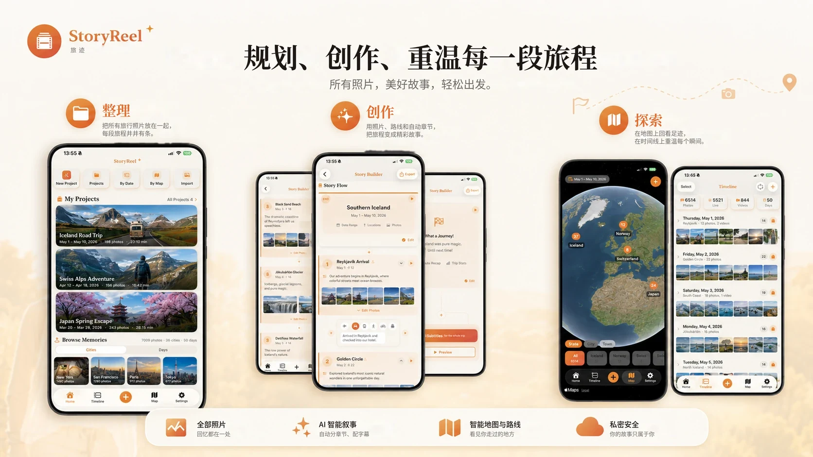
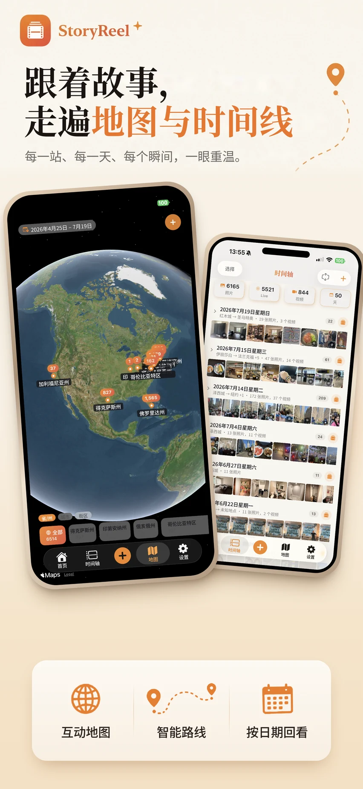

功能亮点
专注一件事，
把它做好。
01整理
每一次旅行，都在这里。
首页集中管理你的视频项目——进行中的、已导出的——附带日期、照片数和时长。“浏览回忆”把整个相册按城市或按天整理好，任何一段旧旅行，点一下就能开始做成视频。
- 一键新建项目，或按日期、按地图、导入照片开始
- 随时继续、重命名、复制或删除项目
- 整个相册的回忆按城市或按天分组
- 无需账号——项目保存在你的 iPhone 上
02创作
每个章节，都能细细打磨。
照片按地点和日期自动分成章节，并在本地挑出最好的几张。故事编辑器把整部视频从上到下铺开——开场、路线、章节、配乐、字幕、结尾——每一部分都可以修改。
- 修改章节的标题、日期、字幕、照片和路线
- 闭眼、模糊的照片和截图会被自动筛掉
- 选择两站之间的交通方式——飞机、汽车、火车等
- 字幕可手打、语音输入，或用可选的 AI 起草

03探索与回顾
在地图和时间线上，重温整段旅程。
地图页把每张照片放到地球上，可以从州缩放到城市和小镇；时间线页按天铺开相册，写明你去了哪里。点一个地方、或选中几天，就能只用这些照片开始做视频。
- 三级缩放：州、城市、小镇
- 每个拍过照片的地方都标出数量
- 每一天都附地点摘要
- 用日历跳到任意日期
- 从一个地点或几天的照片开始新项目
路线动画
章节之间的飞行和自驾路线会在地图或地球上动画呈现，让故事有了地理感。
12 款电影感主题
每个主题都把地图风格、色调、路线动画和字体打包好，一键套用。
配乐与字幕
五种氛围的免版税音乐；字幕可以手打、语音输入，或用可选的 AI 起草。
详细信息
- 类别
- 摄影与录像
- 系统要求
- iOS 18 或更高版本。
- 开发者
- 4M Studio
- 网站语言
- English · 中文
4M Studio 的更多应用